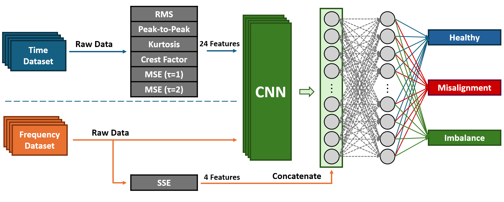
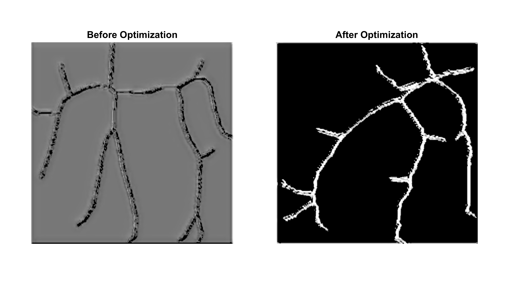
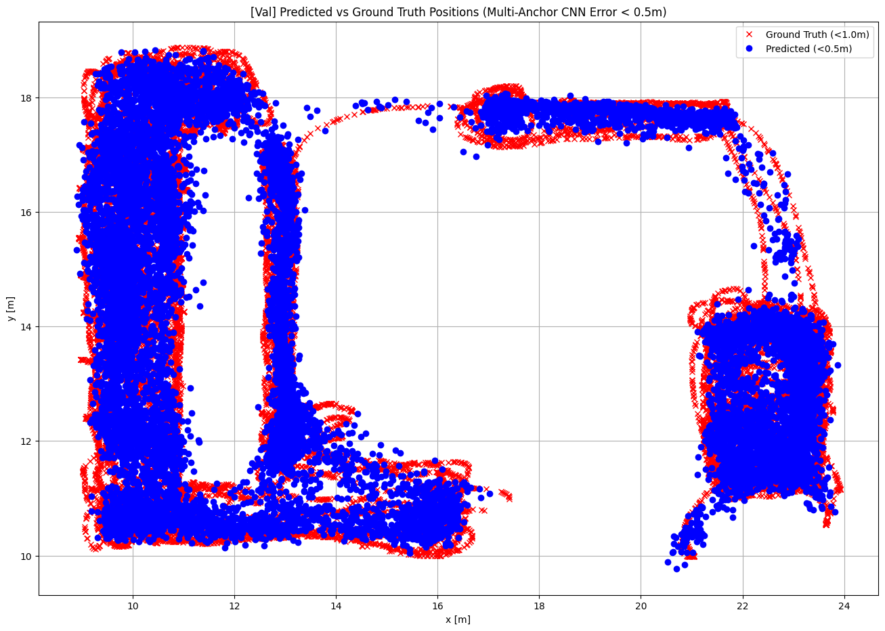

About me
I am an undergraduate researcher at Hanyang University (B.S. Convergence Electronic Engineering, expected Feb 2027), and an exchange student and undergraduate researcher at the University of North Dakota under Prof. Jueming Hu (Jan–May 2026). My research focuses on robust UAV path planning and autonomous navigation under sensor dropout conditions, combining Reinforcement Learning and Imitation Learning. I am applying for PhD programs in Fall 2027.
Featured Research

Accepted · ASME IMECE 2026
Robust Fault Diagnosis of Rotating Machinery via Entropy-Augmented CNN
Developed a fault detection framework using entropy-based signal processing and CNN classification to identify mechanical imbalance and misalignment.
CNN
Signal Processing
PyTorch
Completed
End-to-End RL-Based UAV Waypoint Navigation
Developed an RL-based navigation controller simulating Crazyflie UAV dynamics in PyBullet, implementing single and multi-waypoint goal tracking.
PPO
PyBullet
OpenAI Gym

Completed
Skeleton Detection & Thickness Estimation via Multi-Task CNN
Analyzed and optimized the DeepSkeleton algorithm using a multi-task CNN to simultaneously extract object skeletons and predict structural thickness from natural images.
Multi-task CNN
VGG16
PyTorch

Completed
Multi-Anchor CNN with ToA Attention for UWB Indoor Localization
Developed a Multi-Anchor CNN integrating ToA-based attention to estimate receiver position for UWB-based indoor localization. Achieved RMSE 1.439m below 1.5m commercialization target.
CNN
UWB
Softmax Attention
PyTorch
All Projects
Accepted · ASME IMECE 2026
Robust Fault Diagnosis of Rotating Machinery via Entropy-Augmented CNN
Developed a fault detection framework using entropy-based signal processing and CNN classification to identify mechanical imbalance and misalignment.
CNN
Signal Processing
PyTorch
Completed
End-to-End RL-Based UAV Waypoint Navigation
Developed an RL-based navigation controller simulating Crazyflie UAV dynamics in PyBullet, implementing single and multi-waypoint goal tracking.
PPO
PyBullet
OpenAI Gym
Completed
Skeleton Detection & Thickness Estimation via Multi-Task CNN
Analyzed and optimized the DeepSkeleton algorithm using a multi-task CNN to simultaneously extract object skeletons and predict structural thickness from natural images.
Multi-task CNN
VGG16
PyTorch
Completed
Multi-Anchor CNN with ToA Attention for UWB Indoor Localization
Developed a Multi-Anchor CNN integrating ToA-based attention to estimate receiver position for UWB-based indoor localization. Achieved RMSE 1.439m below 1.5m commercialization target.
CNN
UWB
Softmax Attention
PyTorch
Education
Hanyang University
B.S. Convergence Electronic Engineering · Seoul, South Korea
GPA 4.21 / 4.5
2021 – Feb 2027
University of North Dakota
Exchange Program · Undergraduate Research (Advisor: Prof. Jueming Hu)
GPA 4.0 / 4.0
Jan – May 2026
Publication
Park M., Yang C. X., Hu J. (2026). Robust fault diagnosis of rotating machinery
using entropy-augmented CNN in time and frequency domains.
Accepted · ASME IMECE 2026
2026
Research Experience
Hierarchical UAV Path Planning under Sensor Dropout
University of North Dakota · Jan 2026 – Present
Designed a two-layer hierarchical architecture applying RL and Imitation Learning for robust UAV navigation under sensor dropout. Manuscript in preparation, targeting IEEE.
2026 –
Robust Fault Diagnosis via Entropy-Augmented CNN
University of North Dakota · Jan – May 2026
Developed fault detection framework using entropy-based signal processing and CNN. Published at ASME IMECE 2026.
2026
End-to-End RL-Based UAV Waypoint Navigation
University of North Dakota · Jan – May 2026
Developed RL-based navigation controller simulating Crazyflie UAV in PyBullet for single and multi-waypoint goal tracking.
2026
Multi-Anchor CNN with ToA Attention for UWB Indoor Localization
Hanyang University · Sep – Dec 2025
Developed Multi-Anchor CNN integrating ToA-based attention for UWB indoor localization. Achieved RMSE 1.439m below 1.5m target.
2025
Technical Skills
Python
PyTorch
CNN
Reinforcement Learning (RL)
Imitation Learning (IL)
PyBullet
Crazyflie API
OpenAI Gym
MATLAB
LTspice
Arduino